Human Electrophysiology and AI
Research group of Dr. Dr. Stefanie Liebe · Tübingen
We investigate how neural activity gives rise to human cognition and behaviour, and how its disruption leads to neurological disease such as epilepsy. Our focus is on the neural mechanisms of memory and high-level perception. We use machine learning, including recurrent neural networks and large language models, to analyse rich, high-dimensional recordings of neural activity and behaviour from epilepsy patients, including invasive recordings.
The group connects the Hertie Institute for AI in Brain Health (Hertie AI) and the Hertie Institute for Clinical Brain Research (HIH).
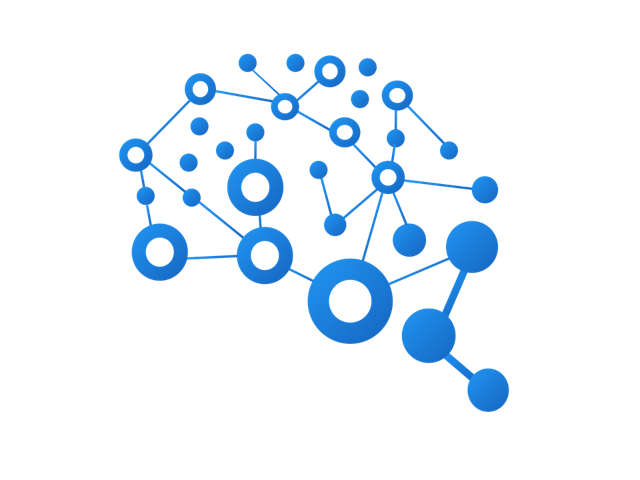
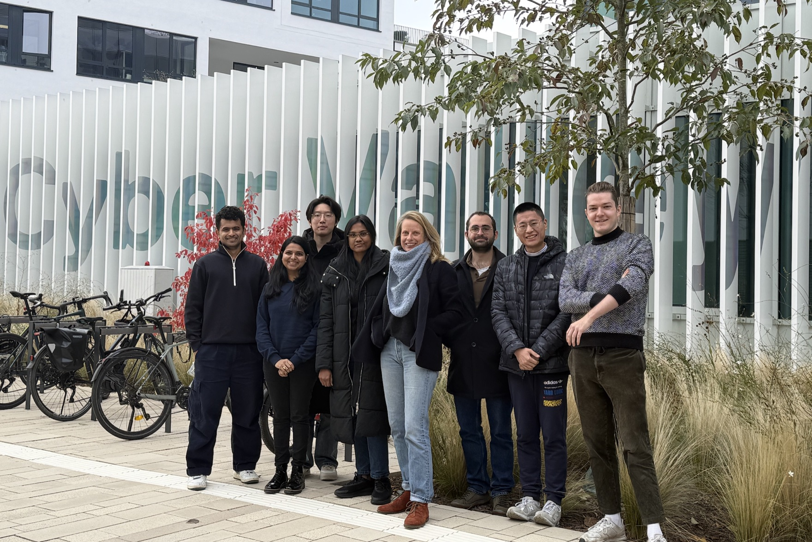
We’re hiring. We have open positions for PhD students and postdocs in human electrophysiology and machine learning. Open positions →News
- TalkStefanie gave a talk in Berlin.
- ConferenceFlorentin attended COLM 2026, the Conference on Language Modeling, in San Francisco (6–9 Oct).
- PaperMeghal presented our paper on parameter-efficient self-supervised adaptation of EEG foundation models at MICCAI 2026 in Strasbourg (27 Sep – 1 Oct).
- WorkshopMeghal, Muthu and Stefanie took part in NEAT 2026, the Neuro-AI Talks workshop, in Osnabrück (14–15 Sep).
- ConferenceMeghal attended the Nature conference “Redefining Healthcare in the Age of AI” at the Sorbonne in Paris (8–10 Sep).
- ConferenceRaees attended the FENS Forum in Barcelona.
- EventRaees attended the CherISH DC Retreat in Vienna, hosted by the Acoustic Research Institute of the Austrian Academy of Sciences (18–19 Jun).
- VisitGianpaolo Palo and Juan Daniel Galeano Otálvaro, doctoral candidates in the CherISH network, visited the lab for their CherISH secondment.
Older news
- TeamTwo new PhD students joined the lab: Max Wassermann will work on intracranial single-unit and LFP recordings as part of the CRC “Robust Vision”, and Jiaxin Wang will study human decision-making and memory with computational modelling, in collaboration with Peter Dayan at the MPI for Biological Cybernetics.
- PosterMeghal, Muthu and Raees presented posters at the Systems Neuroscience Symposium in Tübingen.
- EventJoint women’s retreat of the CRC “Robust Vision” and the SPP Brain Loops in Stuttgart, organised by Stefanie with scientific coordinators Ulf Lüders and Fauve de Arnal.
- PosterMeghal, Muthu and Raees presented posters at the Bernstein Conference in Frankfurt.
- ServiceStefanie is Guest Editor of the Nature collection Cortical–subcortical brain loops (open for submissions until 19 Feb 2026).
- PreprintNew preprint: theta–gamma–spike coupling coordinates sequential memory in the human MTL. bioRxiv
- PressPress coverage of our collaborators Florian Mormann and team (Bonn) on how memory emerges from neuronal activity. ZEIT article (German)
- TalkMuthu gave a Young Investigator talk in the symposium “Investigating memory using human single-neuron recordings” at the 16th NWG Meeting in Göttingen.
- PaperOur paper is out in Nature Neuroscience. Paper
- EventMuthu and Raees represented the lab at the IMPRS-MMFD retreat.
- GrantWe received a DFG African-German Scientific Exchange grant in neuroscience, on supporting epilepsy diagnosis with AI.
- GrantThe Collaborative Research Center CRC 1233 “Robustness of Vision – Principles of Inference and Neural Mechanisms” was awarded.
- WorkshopRaees and Stefanie contributed to the CherISH workshop in Tübingen.
- TeamRaees joined the lab.
- ConferenceMuthu presented her work at the Bernstein Conference.
- TeachingMeghal and Stefanie ran an interactive tutorial on LLMs in healthcare at the IMPRS-IS Bootcamp.
- PaperMeghal presented SemioLLM at the ICML 2024 AI for Science workshop.
- ChallengeWith the Mackelab, five of our submissions ranked in the top 10 of the Seizure Detection Challenge organised by EPFL and partners.
- TalkStefanie gave a guest lecture at AIMS Africa.
Research
Our lab studies how neural circuits in the human brain support cognition and behavior, and how they break down in neurological disease. We work with patients with epilepsy who have intracranial electrodes implanted for clinical diagnosis. This gives us rare access to the activity of single neurons and local brain networks in the awake human brain. We use these recordings to address both cognitive and clinical questions. Embedded in clinical care, our work is highly translational: insights from basic neuroscience feed directly back into the diagnosis and treatment of patients with epilepsy.
From neurons to cognition. We look at how single neurons in the medial temporal lobe, amygdala, insula and frontal cortex represent information during perception, memory, decision-making and emotion. To get at the underlying computations, we train artificial neural networks on the same tasks our participants perform and compare the networks’ internal dynamics with the brain recordings.
From cells to clinical signals. We ask how the firing of individual neurons relates to the population signals that clinicians use to diagnose epilepsy, such as LFP and stereo-EEG. We are especially interested in this relationship before and during seizures. The goal is to find cellular signatures that give seizure prediction and biomarker development a mechanistic basis.
AI for brain function and disease. AI and computational modeling run through all of our work. We use them as tools for discovery, extracting the principles that underlie human brain function from neural and behavioral data. We also use them clinically, combining multimodal data such as electrophysiology, imaging and clinical records to improve how epilepsy is diagnosed, classified and treated. Together, these approaches link cellular mechanisms to brain dynamics and clinical practice, with the aim of building mechanistic models of human brain function and dysfunction.
Publications
For the full list, see Google Scholar.
-
Parameter-efficient self-supervised adaptation for EEG-FM under fixed computational budgets
MICCAI 2026 Medical Image Computing and Computer Assisted Intervention · conference paper
-
Human neuron activity during an 83-minute movie from 2,286 neurons and 29 patients
Scientific Data, 2026
-
Decoding movie content from neuronal population activity in the human medial temporal lobe
eLife, 2025
-
Phase of firing does not reflect temporal order in sequence memory of humans and recurrent neural networks
Nature Neuroscience, 2025
-
SemioLLM: Assessing large language models for semiological analysis in epilepsy research
ICML 2024 International Conference on Machine Learning, AI for Science Workshop · workshop paper
Earlier publications
-
Theta coupling between V4 and prefrontal cortex predicts visual short-term memory performance
Nature Neuroscience, 2012
-
Dissociable effects of natural image structure and color on LFP and spiking activity in the lateral prefrontal cortex and extrastriate visual area V4
Journal of Neuroscience, 2011
-
Cholinergic control of visual categorization in macaques
Frontiers in Behavioral Neuroscience, 2011
-
Directed coupling in local field potentials of macaque V4 during visual short-term memory revealed by multivariate autoregressive models
Frontiers in Computational Neuroscience, 2010
-
Color and shape interactions in the recognition of natural scenes by human and monkey observers
Journal of Vision, 2009
Team
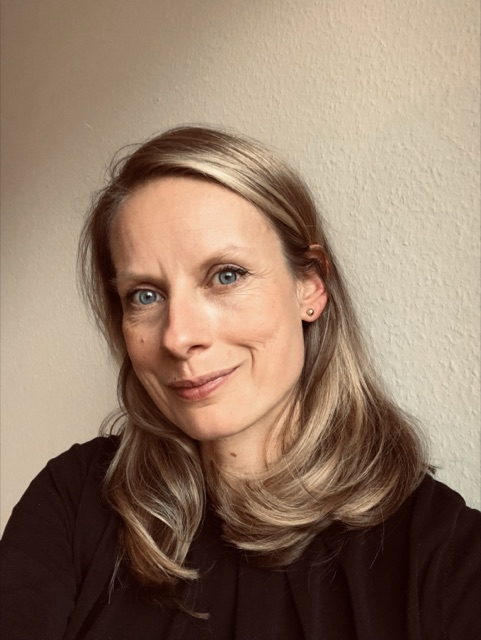
Dr. Dr. Stefanie Liebe
Principal Investigator · Universitätsklinikum Tübingen
Clinician scientist in the Department of Neurology and Epileptology at the University Hospital Tübingen and the Cluster of Excellence “Machine Learning for Science”. Trained in psychology, medicine and neuroscience.
Full bio
As a psychologist, Stefanie uses cognitive concepts, experimental paradigms and procedures to study cognitive function at the behavioural and neuropsychological level. As a neuroscientist, she studies the neural basis of vision and memory. She applies classical analysis tools and modern machine learning to invasive recordings from epilepsy patients. As a clinician, she uses AI to support epilepsy diagnosis. Her work is highly collaborative, bringing together neurology, neurosurgery and neuroradiology with experimental and computational neuroscience.
She studied psychology at TU Dresden and earned her PhD in Neuroscience at the Max Planck International Research School for Neural and Behavioral Sciences in Tübingen. She completed medical training in Tübingen and Bonn. In Bonn she began her neurological residency in the Department of Epileptology and worked as a research associate in the lab of Prof. Florian Mormann. In 2020 she moved to Tübingen, where she continued her residency in Epileptology. She is now a Clinician Scientist in the MINT-CS program and an associated scientist of the IMPRS for Intelligent Systems.
She is a PI on projects funded by:
PhD students
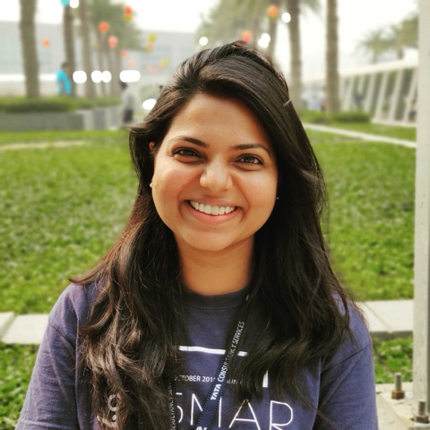
Meghal Dani
PhD student · IMPRS-IS
Full bio
Meghal is a PhD candidate in Computer Science at the International Max Planck Research School for Intelligent Systems (IMPRS-IS). Her main research focus is developing and testing AI methods for clinical neuroscience applications using multi-modal data.
She holds an M.Tech in Computational Biology from IIIT Delhi and a B.E. in Computer Science from BIT Mesra. From 2019 to 2021 she was a full-time researcher at Tata Research and Innovation Labs, working on medical image analysis and 3D computer vision. That work led to multiple publications and patents.
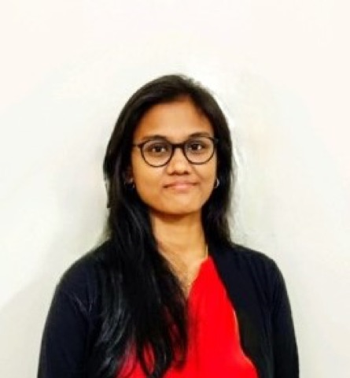
Muthu Jeyanthi Prakash
PhD student · IMPRS-MMFD
Full bio
Muthu is a PhD candidate at the Graduate Training Centre of Neuroscience in Tübingen. She is working on intracranial recordings in epilepsy patients and is specifically interested in the cellular mechanisms of human cognition.
Muthu holds a Bachelor’s degree in Industrial Biotechnology from Anna University, India. She completed the International Master in Neurosciences at the University of Bordeaux with support from the Région Nouvelle-Aquitaine grant and the FidEx International Mobility Scholarship. She gained computational research experience through internships at the Bordeaux Population Health Center, Radboud University and IIT Madras.
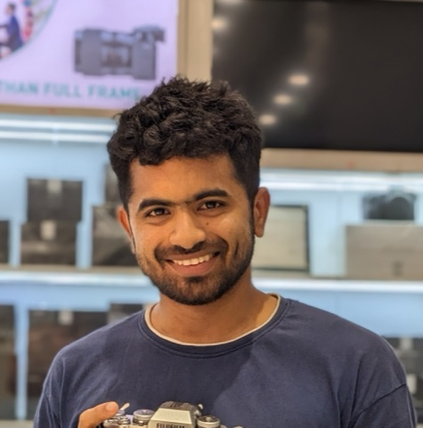
Mohammed Raees MK
PhD student · MSCA CherISH (DC2) · IMPRS-MMFD
Full bio
Raees is part of the MSCA Doctoral Network CherISH and an associate PhD student with the Machine Learning in Science group. He holds a BS-MS from the Indian Institute of Science, Bangalore, specialising in theoretical and computational neuroscience. He then spent four years as a data scientist in industrial R&D at Tally Solutions, working on NLP and mathematical modelling.
His interests include brain-inspired machine learning (learning, memory and neural representations) and explainable AI. Outside work, he enjoys everything football: playing, watching and writing code to analyse the game.
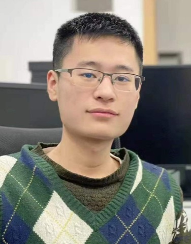
Jiaxin Wang
PhD student · MPI for Biological Cybernetics
Full bio
Jiaxin studies human decision-making and memory with computational modelling. He is co-supervised by Prof. Peter Dayan at the Max Planck Institute for Biological Cybernetics.
He is also interested in how humans learn, build and use knowledge structures, and how memory interacts with these processes. He holds a Master’s degree from Beijing Normal University, where he studied the neural mechanisms of human cooperative behaviour with simultaneous intracranial recordings. Away from brains and models, you will find him at the cinema, on a run, or looking for his next favourite meal.
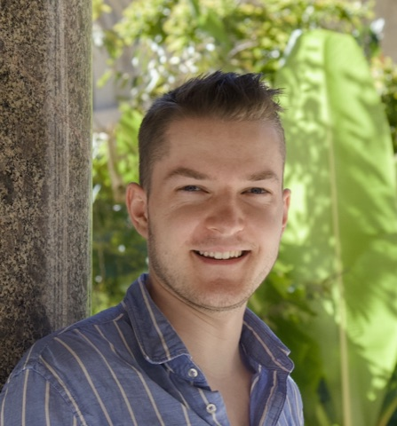
Florentin Beck
PhD student · IMPRS-IS
Clinician scientists
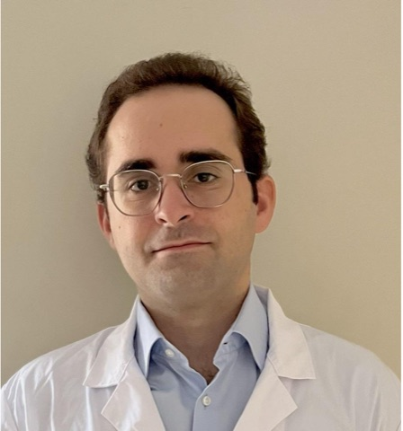
Dimitrios Dimitrakopoulos
Clinician scientist
Interns
Svea Osterloh
Intern
Zhidong Zhang
Intern
Collaborators
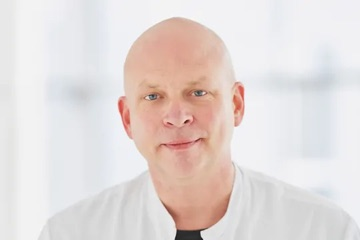
Prof. Florian MormannDepartment of Epileptology
University of Bonn Medical Center
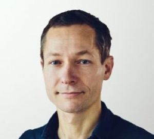
Prof. Jakob MackeMachine Learning in Science
University of Tübingen
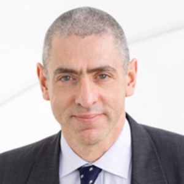
Prof. Peter DayanDepartment of Computational Neuroscience
MPI for Biological Cybernetics, Tübingen
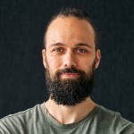
Prof. Carsten EickhoffHealth NLP Lab
University of Tübingen
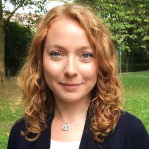
Prof. Zeynep AkataHelmholtz Munich
Technical University of Munich
Funding
Open positions
We are looking for motivated people who want to work at the intersection of human electrophysiology, machine learning and clinical neuroscience. Join our team that brings together clinicians, neuroscientists and ML researchers!
Contact
For inquiries, email stefanie.liebe@uni-tuebingen.de.
Maria-von-Linden-Str. 6, 3rd floor
72076 Tübingen, Germany
Open in Google Maps